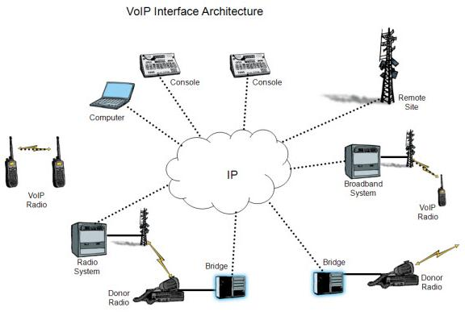

Modes de diffusion

Le terme « VoIP » est en général utilisé pour décrire des
communications « point à point ». Pour la diffusion de son ou de
vidéos sur IP en multipoints, on parlera plutôt de streaming pour
une simple diffusion, comme les radios Web par exemple. Le terme
multipoints sera réservé à des visioconférences dont le nombre de
participants est plus grand que deux. La voix ou le son sur IP peut
se faire en mode Unicast, broadcast ou Multicast sur les réseaux,
c'est-à-dire en mode « point à point », en mode « une émission et
plusieurs réceptions » (comme un émetteur TV, par exemple) et en
mode « une émission pour plusieurs réceptions » (mais le signal
n'est routé que s'il y a des récepteurs) comme les radios Web. Le
protocole H.323 ne fonctionne qu'en mode Unicast. Le transport de
communication sur IP est très dépendant du délai de latence d'un
réseau. Ce délai influe beaucoup sur la qualité psycho-acoustique
d'une conversation. Avec l'avènement des réseaux 100 Mbit/s, ADSL ou
par fibres optiques, les temps de latence deviennent tout à fait
acceptables pour une utilisation quotidienne de la voix sur IP. À
l'inverse, les connexions par liaison satellite souffrent d'un temps
de latence souvent trop important pour prendre en charge les
applications de voix sur IP. En moyenne, le temps de latence sur ce
type de liaison est estimé entre 400 et 800 millisecondes. Une
connexion filaire (fibre optique ou cuivre) bénéficie d'un temps de
latence de 60 à 200 millisecondes. Plus que la latence, c'est qui
pénalise la voix sur IP. En effet, s'il y a des fluctuations du
signal en amplitude et fréquence, il faudra un mécanisme de remise
en ordre des paquets afin de restituer le message vocal, processus
qui se traduira par des blancs et des attentes.
Matériels
Les box triple play des fournisseurs d'accès à Internet intègrent toutes une fonction de VoIP basée sur SIP ou sur des logiciels propriétaires. On trouve aussi de plus en plus de terminaux directement compatibles VoIP par exemple des téléphones Wi-Fi tout en un, des smartphones ou bien des passerelles VoIP qui permettent de raccorder un ancien poste de téléphone classique à un service de Voix sur IP. Certains matériels sont liés, dans leur fonctionnement, à des solutions propriétaires comme les téléphones Skype, alors que d'autres sont fondés sur le protocole ouvert SIP, offrant ainsi une compatibilité avec une grande variété de services VoIP. Il existe aussi des cartes d'interface PCI ou PCI Express (exemple : Digium) qui permettent aux logiciels des PABX (tels qu'Asterisk) de se raccorder à une ou plusieurs lignes analogiques (classiques). Pour une meilleure compatibilité VoIP, celles-ci doivent respecter les normes TIA/EIA, ISO/IEC ou Cenelec du câblage informatique Ortronics en fibre optique ou cuivre.